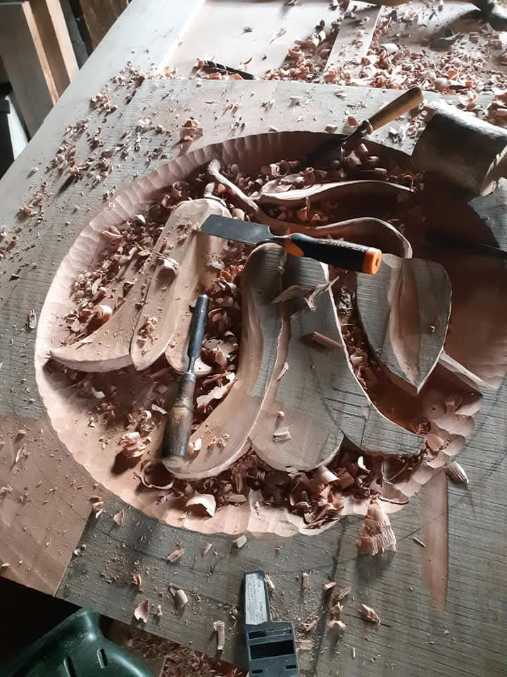

Sobre Nosotros
El oficio como decisión de vida
Un taller de campo donde la madera manda y el diseño escucha.

La historia
Luciano Monsalve Pasmiño
Mi historia con la madera comenzó en el año 2003, impulsado por una decisión de vida: ser un artesano autodidacta para no tener que emigrar del campo, mi hábitat natural y fuente de inspiración.
No estudié en una escuela de diseño. Aprendí mirando el bosque, desarmando errores y repitiendo cortes hasta que la mano entendió lo que el ojo pedía. Con los años ese camino se transformó en un estilo propio: diseños que nacen libremente a partir de las formas y colores naturales de las maderas.
Cada creación conserva las curvas, los nudos y las tonalidades originales de la madera. No los escondo: los pongo al centro. Ahí está la identidad de la pieza y la razón por la que ninguna se parece a otra.
Luciano Monsalve Pasmiño
El taller
Donde ocurre todo
Un espacio de trabajo abierto al campo, con herramientas de mano, maquinaria precisa y madera esperando su forma.
Herramienta viva
Gubias, formones y cepillos que llevan más de veinte años en uso.

Selección de la madera
Cada tabla se elige por su veta, su nudo y la historia que ya trae.

Obra terminada
La pieza se entrega instalada y revisada, lista para durar generaciones.
Proceso artesanal
Cuatro etapas, sin atajos
Conversación
Escuchamos el uso, el espacio y el presupuesto. Nada se diseña antes de entender.
Diseño y madera
Boceto, medidas y elección de la tabla exacta que dará carácter a la pieza.
Taller
Corte, ensamble y terminaciones a mano, respetando curvas, nudos y tonos naturales.
Entrega
Traslado, instalación y recomendaciones de cuidado para toda la vida útil.
Valores
Respeto por el entorno
En mi taller utilizamos materia prima proveniente del respeto por el entorno: madera de manejo responsable, recuperación de piezas caídas y aprovechamiento íntegro del material.
- Madera nativa y recuperada, con trazabilidad de origen.
- Cero producción en serie: una pieza, un cliente, una historia.
- Aceites y terminaciones de bajo impacto.
- Aprovechamiento de despuntes en creaciones menores.
- Trabajo local que sostiene la vida en el campo.

¿Conversamos tu proyecto?
Escríbenos y comencemos por lo más importante: entender qué necesitas.